Armas, herramientas y munición
Armas, herramientas y munición en Valheim – 200 objetos con bioma, origen, herramienta necesaria, receta y uso.
No se encontró ningún objeto.
 Almádena de fuego gélido
Almádena de fuego gélido
¿Está tan fría que quema, o tan caliente que congela?
Cómo conseguirlo
- Fabricar: Forja negra (nivel 4) a partir de 1 ×
 Almádena nord, 20 ×
Almádena nord, 20 × 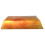
Oro sanguino, 1 × Esencia de fuego gélido · por mejora: 10 × Oro sanguino, 1 × Esencia de fuego gélido
Esencia de fuego gélido · por mejora: 10 × Oro sanguino, 1 × Esencia de fuego gélido
 Almádena de sangre de trueno
Almádena de sangre de trueno
Cuando esta arma golpea con acierto, el impacto resonará por todo el mundo...
Cómo conseguirlo
- Fabricar: Forja negra (nivel 4) a partir de 1 × Almádena nord, 20 × Oro sanguino, 1 ×
 Esencia de sangre de trueno · por mejora: 10 × Oro sanguino, 1 × Esencia de sangre de trueno
Esencia de sangre de trueno · por mejora: 10 × Oro sanguino, 1 × Esencia de sangre de trueno
Almádena nord
Con esta arma, tus golpes serán tan contundentes como los de un trol.
Cómo conseguirlo
- Fabricar: Forja negra (nivel 4) a partir de 20 × Oro sanguino, 1 ×
 Molde: almádena nord, 10 ×
Molde: almádena nord, 10 ×  Leño de construcción · por mejora: 10 × Oro sanguino, 5 × Leño de construcción
Leño de construcción · por mejora: 10 × Oro sanguino, 5 × Leño de construcción - Cocinar: Forja de escarcha a partir de
 Pieza fundida: almádena nord
Pieza fundida: almádena nord
Uso
- Ingrediente para: Almádena de fuego gélido, Almádena de sangre de trueno
 Antorcha
Antorcha
Emite luz y calor, por lo que aleja a la oscuridad.
Cómo conseguirlo
- Fabricar: sin mesa de trabajo a partir de 1 ×
 Madera, 1 ×
Madera, 1 ×  Resina
Resina - Cofres: Barco de piedras (tumba) · 53 % de probabilidad, Aldea del Norte · 53 % de probabilidad, Cabaña (Norte) · 52 % de probabilidad, Campamento de leñadores · 52 % de probabilidad, Ruina de combate · 50 % de probabilidad, Casa de madera abandonada · 28–36 % de probabilidad, Granja abandonada · 36 % de probabilidad, Aldea draugr · 36 % de probabilidad
 Arbalesta
Arbalesta
Una lenta pero poderosa arma.
Cómo conseguirlo
 Arco de cazador
Arco de cazador
Tiene una mano de obra muy fina y es la alegría de todo cazador.
Cómo conseguirlo
- Fabricar: Forja a partir de 10 ×
 Madera noble, 20 ×
Madera noble, 20 ×  Hierro, 10 ×
Hierro, 10 ×  Plumas, 2 ×
Plumas, 2 ×  Piel de ciervo · por mejora: 5 × Madera noble, 10 × Hierro, 5 × Plumas, 2 × Piel de ciervo
Piel de ciervo · por mejora: 5 × Madera noble, 10 × Hierro, 5 × Plumas, 2 × Piel de ciervo
 Arco de fuego gélido
Arco de fuego gélido
Mantén la cabeza fría al tensar, y luego desata tu furia con las flechas.
Cómo conseguirlo
- Fabricar: Forja negra (nivel 4) a partir de 1 ×
 Arco nord, 20 × Oro sanguino, 1 × Esencia de fuego gélido · por mejora: 10 × Oro sanguino, 1 × Esencia de fuego gélido
Arco nord, 20 × Oro sanguino, 1 × Esencia de fuego gélido · por mejora: 10 × Oro sanguino, 1 × Esencia de fuego gélido
 Arco de madera noble
Arco de madera noble
Un arco simple hecho de madera fuerte y flexible.
Cómo conseguirlo
- Fabricar: Banco de trabajo a partir de 10 × Madera noble, 10 ×
 Madera resistente, 2 × Piel de ciervo · por mejora: 5 × Madera noble, 5 × Madera resistente, 2 × Piel de ciervo
Madera resistente, 2 × Piel de ciervo · por mejora: 5 × Madera noble, 5 × Madera resistente, 2 × Piel de ciervo
 Arco de sangre de trueno
Arco de sangre de trueno
El relámpago danza en la cuerda, esperando ser liberado.
Cómo conseguirlo
- Fabricar: Forja negra (nivel 4) a partir de 1 × Arco nord, 20 × Oro sanguino, 1 × Esencia de sangre de trueno · por mejora: 10 × Oro sanguino, 1 × Esencia de sangre de trueno
Arco nord
Este arco dará en el blanco con una precisión milimétrica.
Cómo conseguirlo
- Fabricar: Forja negra (nivel 4) a partir de 20 × Oro sanguino, 1 ×
 Molde: arco nord, 10 × Leño de construcción · por mejora: 10 × Oro sanguino, 5 × Leño de construcción
Molde: arco nord, 10 × Leño de construcción · por mejora: 10 × Oro sanguino, 5 × Leño de construcción - Cocinar: Forja de escarcha a partir de
 Pieza fundida: arco nord
Pieza fundida: arco nord
Uso
- Ingrediente para: Arco de fuego gélido, Arco de sangre de trueno
 Arco tosco
Arco tosco
Un arco tosco pero funcional.
Cómo conseguirlo
- Fabricar: Banco de trabajo a partir de 10 × Madera, 8 ×
 Trozos de cuero · por mejora: 5 × Madera, 4 × Trozos de cuero, 1 × Piel de ciervo
Trozos de cuero · por mejora: 5 × Madera, 4 × Trozos de cuero, 1 × Piel de ciervo
 Arpón abisal
Arpón abisal
La ira del océano.
Cómo conseguirlo
- Fabricar: Banco de trabajo (nivel 2) a partir de 8 × Madera noble, 30 ×
 Quitina, 3 × Trozos de cuero
Quitina, 3 × Trozos de cuero
 Asesina
Asesina
Esta poderosa espada tiene sed de la sangre de los enemigos.
Cómo conseguirlo
- Fabricar: Forja negra (nivel 3) a partir de 30 ×
 Flametal, 5 ×
Flametal, 5 ×  Pellejo de cenicerdo, 3 ×
Pellejo de cenicerdo, 3 ×  Tendón de Morgen · por mejora: 15 × Flametal, 5 × Pellejo de cenicerdo, 3 × Tendón de Morgen
Tendón de Morgen · por mejora: 15 × Flametal, 5 × Pellejo de cenicerdo, 3 × Tendón de Morgen
Uso
- Ingrediente para: Asesina brutal, Asesina primigenia, Asesina tempestuosa
 Asesina brutal
Asesina brutal
Si sangra, puedes matarlo.
Cómo conseguirlo
- Fabricar: Forja negra (nivel 4) a partir de 1 × Asesina, 15 × Flametal, 1 ×
 Piedra de sangre · por mejora: 15 × Flametal, 1 × Piedra de sangre
Piedra de sangre · por mejora: 15 × Flametal, 1 × Piedra de sangre
 Asesina primigenia
Asesina primigenia
La espada trabaja con las fuerzas primigenias del mundo, buscando la muerte y la matanza.
Cómo conseguirlo
 Asesina tempestuosa
Asesina tempestuosa
El rayo vinculado en esta espada es errático y siempre busca algo que golpear.
Cómo conseguirlo
 Atgeir de bronce
Atgeir de bronce
El mejor amigo de un guerrero.
Cómo conseguirlo
- Fabricar: Forja a partir de 10 × Madera, 8 ×
 Bronce, 2 × Trozos de cuero · por mejora: 4 × Bronce
Bronce, 2 × Trozos de cuero · por mejora: 4 × Bronce
 Atgeir de fuego gélido
Atgeir de fuego gélido
Que las llamas empiecen a devorar, mientras el hielo reclama lo que queda.
Cómo conseguirlo
- Fabricar: Forja negra (nivel 4) a partir de 1 ×
 Atgeir nord, 20 × Oro sanguino, 1 × Esencia de fuego gélido · por mejora: 10 × Oro sanguino, 1 × Esencia de fuego gélido
Atgeir nord, 20 × Oro sanguino, 1 × Esencia de fuego gélido · por mejora: 10 × Oro sanguino, 1 × Esencia de fuego gélido
 Atgeir de hierro
Atgeir de hierro
Chupasangre, rompecráneos, portador de la muerte.
Cómo conseguirlo
- Fabricar: Forja (nivel 2) a partir de 10 × Madera, 30 × Hierro, 2 × Trozos de cuero · por mejora: 15 × Hierro, 1 × Trozos de cuero
 Atgeir de madera
Atgeir de madera
Tal vez no haga mucho daño, ¡pero si que tiene alcance!
Cómo conseguirlo
- Cofres: Cabaña fuling · 17 % de probabilidad, Torre de piedra (Montañas) · 17 % de probabilidad, Ruina · 17 % de probabilidad, Misión de Hildir: Torre sellada · 17 % de probabilidad, Aldea fuling · 17 % de probabilidad
 Atgeir de metal negro
Atgeir de metal negro
Hacha despiadada de un metal negro y prácticamente irrompible.
Cómo conseguirlo
- Fabricar: Forja (nivel 4) a partir de 10 × Madera noble, 30 ×
 Metal negro, 5 × Hilo de lino · por mejora: 15 × Metal negro, 5 × Hilo de lino
Metal negro, 5 × Hilo de lino · por mejora: 15 × Metal negro, 5 × Hilo de lino
 Atgeir de sangre de trueno
Atgeir de sangre de trueno
Los cielos resonarán en alabanza mientras haces sangrar a tus enemigos.
Cómo conseguirlo
- Fabricar: Forja negra (nivel 4) a partir de 1 × Atgeir nord, 20 × Oro sanguino, 1 × Esencia de sangre de trueno · por mejora: 10 × Oro sanguino, 1 × Esencia de sangre de trueno
Atgeir nord
El filo de esta arma es tan letal como brillante.
Cómo conseguirlo
- Fabricar: Forja negra (nivel 4) a partir de 20 × Oro sanguino, 1 ×
 Molde: atgeir nord, 10 × Leño de construcción · por mejora: 10 × Oro sanguino, 5 × Leño de construcción
Molde: atgeir nord, 10 × Leño de construcción · por mejora: 10 × Oro sanguino, 5 × Leño de construcción - Cocinar: Forja de escarcha a partir de
 Pieza fundida: atgeir nord
Pieza fundida: atgeir nord
Uso
- Ingrediente para: Atgeir de fuego gélido, Atgeir de sangre de trueno
 Azada
Azada
Herramienta que se usa para trabajar la tierra.
Cómo conseguirlo
 Báculo de Protección
Báculo de Protección
Por una pequeña ofrenda de sangre, protegerá al lanzador con un caparazón mágico.
Cómo conseguirlo
- Fabricar: Mesa de galdr a partir de 20 ×
 Madera de Yggdrasil, 4 ×
Madera de Yggdrasil, 4 ×  Coágulo de sangre, 16 ×
Coágulo de sangre, 16 ×  Eitr refinado · por mejora: 10 × Madera de Yggdrasil, 2 × Coágulo de sangre, 8 × Eitr refinado
Eitr refinado · por mejora: 10 × Madera de Yggdrasil, 2 × Coágulo de sangre, 8 × Eitr refinado
 Báculo Fracturador
Báculo Fracturador
Solo aquellos con paciencia y concentración podrán aprovechar el verdadero poder de este báculo.
Cómo conseguirlo
- Fabricar: Mesa de galdr (nivel 2) a partir de 15 ×
 Hueso carbonizado, 5 ×
Hueso carbonizado, 5 ×  Madera de ceniza, 8 ×
Madera de ceniza, 8 × 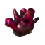
Polvo de proustita · por mejora: 5 ×Hueso carbonizado, 3 × Madera de ceniza, 1 × Polvo de proustita
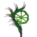
Báculo SilvestreAntiguas fuerzas de la naturaleza yacen enroscadas y adormecidas en este bastón, listas para ser liberadas.
Cómo conseguirlo
- Fabricar: Mesa de galdr (nivel 2) a partir de 15 × Madera de ceniza, 10 ×
 Cabeza de violín, 3 ×
Cabeza de violín, 3 ×  Pluma celestial, 1 ×
Pluma celestial, 1 ×  Jade · por mejora: 5 × Madera de ceniza, 2 × Cabeza de violín, 3 × Pluma celestial, 1 × Jade
Jade · por mejora: 5 × Madera de ceniza, 2 × Cabeza de violín, 3 × Pluma celestial, 1 × Jade
 Ballesta de fuego gélido
Ballesta de fuego gélido
Si tus enemigos no se congelan al apuntar, seguro que lo harán al ser alcanzados.
Cómo conseguirlo
- Fabricar: Forja negra (nivel 4) a partir de 1 ×
 Ballesta nord, 20 × Oro sanguino, 1 × Esencia de fuego gélido · por mejora: 10 × Oro sanguino, 1 × Esencia de fuego gélido
Ballesta nord, 20 × Oro sanguino, 1 × Esencia de fuego gélido · por mejora: 10 × Oro sanguino, 1 × Esencia de fuego gélido
 Ballesta de sangre de trueno
Ballesta de sangre de trueno
La cuerda está tensa con poder contenido, como el aire antes de un rayo.
Cómo conseguirlo
- Fabricar: Forja negra (nivel 4) a partir de 1 × Ballesta nord, 20 × Oro sanguino, 1 × Esencia de sangre de trueno · por mejora: 10 × Oro sanguino, 1 × Esencia de sangre de trueno
Ballesta nord
Esta arma encierra una fuerza increíble, a la espera de ser desatada.
Cómo conseguirlo
- Fabricar: Forja negra (nivel 4) a partir de 20 × Oro sanguino, 1 ×
 Molde: ballesta nord, 10 × Leño de construcción · por mejora: 10 × Oro sanguino, 5 × Leño de construcción
Molde: ballesta nord, 10 × Leño de construcción · por mejora: 10 × Oro sanguino, 5 × Leño de construcción - Cocinar: Forja de escarcha a partir de
 Pieza fundida: ballesta nord
Pieza fundida: ballesta nord
Uso
- Ingrediente para: Ballesta de fuego gélido, Ballesta de sangre de trueno
 Bandeja para servir
Bandeja para servir
Prepara la mesa con la comida y bebida que te apetezca e impresiona a tus invitados con un delicioso festín.
Cómo conseguirlo
- Comprar: La bruja del pantano · 140 monedas
 Bastón de Ascuas
Bastón de Ascuas
El calor abrasador de Muspelheim casi parece patético en comparación a lo que puede hacer este bastón...
Cómo conseguirlo
- Fabricar: Mesa de galdr a partir de 20 × Madera de Yggdrasil, 4 ×
 Corazón de surtling, 16 × Eitr refinado · por mejora: 10 × Madera de Yggdrasil, 2 × Corazón de surtling, 8 × Eitr refinado
Corazón de surtling, 16 × Eitr refinado · por mejora: 10 × Madera de Yggdrasil, 2 × Corazón de surtling, 8 × Eitr refinado
 Bastón de la Ventisca
Bastón de la Ventisca
Un bastón tan frío como el invierno de tres años que anunciará el fin de los tiempos.
Cómo conseguirlo
- Fabricar: Mesa de galdr a partir de 20 × Madera de Yggdrasil, 4 ×
 Glándula congelada, 16 × Eitr refinado · por mejora: 10 × Madera de Yggdrasil, 2 × Glándula congelada, 8 × Eitr refinado
Glándula congelada, 16 × Eitr refinado · por mejora: 10 × Madera de Yggdrasil, 2 × Glándula congelada, 8 × Eitr refinado
 Bengala
Bengala
Un palito que echa chispas. ¡Es bonito!
Cómo conseguirlo
- Comprar: Hildir · 150 monedas
 Bola de nieve
Bola de nieve
Parece algo perfecto para lanzar...
Cómo conseguirlo
- Recoger: En el suelo o silvestre · Norte profundo
- Lo suelta: Grisucio · Norte profundo
- Fabricar: 10 × sin mesa de trabajo a partir de 5 ×
 Hielo
Hielo
Uso
- Material de construcción para: Farol de nieve
 Bomba de basalto
Bomba de basalto
Con suficiente calor, se solidifica al explotar.
Cómo conseguirlo
- Fabricar: 5 × Banco de trabajo a partir de 1 × Pellejo de cenicerdo, 1 ×
 Vejiga de cenicerdo, 3 × Polvo de proustita
Vejiga de cenicerdo, 3 × Polvo de proustita
 Bomba de bilis
Bomba de bilis
Manejar con cuidado.
Cómo conseguirlo
- Fabricar: 3 × Banco de trabajo a partir de 1 ×
 Savia, 1 ×
Savia, 1 ×  Bolsa de bilis, 3 × Resina
Bolsa de bilis, 3 × Resina
 Bomba de humo
Bomba de humo
Todo el mundo sabe que no se puede respirar el humo.
Cómo conseguirlo
- Fabricar: 10 × Banco de trabajo a partir de 1 ×
 Soplahumo, 1 × Vejiga de cenicerdo
Soplahumo, 1 × Vejiga de cenicerdo
 Bomba de lodo
Bomba de lodo
El hedor es insoportable...
Cómo conseguirlo
- Fabricar: 5 × Banco de trabajo a partir de 5 × Trozos de cuero, 5 ×
 Lodo, 3 × Resina
Lodo, 3 × Resina
 Bomba pegote: pulpa
Bomba pegote: pulpa
En la mazmorra es donde está el pegote.
Cómo conseguirlo
- Fabricar: Banco de trabajo a partir de 1 ×
 Frasco con corcho, 1 ×
Frasco con corcho, 1 ×  Trofeo de pulpa, 3 ×
Trofeo de pulpa, 3 ×  Pulpa muerta
Pulpa muerta
 Bombabosa: Brea
Bombabosa: Brea
Puedes sentir los latidos de la sustancia pegajosa que se encuentra dentro, como si te amenazara.
Cómo conseguirlo
- Fabricar: Banco de trabajo a partir de 1 × Frasco con corcho, 1 ×
 Trofeo del bulto, 3 ×
Trofeo del bulto, 3 ×  Brea
Brea
 Bombabosa: Escarcha
Bombabosa: Escarcha
Si lo sostienes por mucho tiempo tu mano podría congelarse.
Cómo conseguirlo
- Fabricar: Banco de trabajo a partir de 1 × Frasco con corcho, 1 ×
 Trofeo de draco, 3 × Resina
Trofeo de draco, 3 × Resina
 Bombabosa: Lava
Bombabosa: Lava
El frasco se siente caliente en tu mano, y te promete destrucción ardiente.
Cómo conseguirlo
- Fabricar: Banco de trabajo a partir de 1 × Frasco con corcho, 10 ×
 Azufre, 10 × Polvo de proustita
Azufre, 10 × Polvo de proustita
 Bombabosa: Super veneno
Bombabosa: Super veneno
No se recomienda inhalar el humo.
Cómo conseguirlo
- Fabricar: Banco de trabajo a partir de 1 × Frasco con corcho, 3 ×
 Trofeo de masa, 3 × Resina
Trofeo de masa, 3 × Resina
 Bombabosa: Veneno
Bombabosa: Veneno
En caso de que se rompa, se aconseja mucha precaución.
Cómo conseguirlo
- Fabricar: Banco de trabajo a partir de 1 × Frasco con corcho, 1 × Trofeo de masa, 3 × Resina
 Caminante de la Neblina
Caminante de la Neblina
El tenue brillo hace parecer que corta a través de la niebla.
Cómo conseguirlo
- Fabricar: Forja negra a partir de 3 × Madera noble, 15 × Hierro, 10 × Eitr refinado, 3 ×
 Wisp · por mejora: 10 × Hierro, 5 × Eitr refinado, 1 × Wisp
Wisp · por mejora: 10 × Hierro, 5 × Eitr refinado, 1 × Wisp
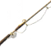
Caña de pescarCaña de pescar normal y corriente de los dvergr.
Cómo conseguirlo
- Comprar: Haldor · 350 monedas
- Recoger: Cueva helada
 Carga de brasas
Carga de brasas
Brasas atrapadas, listas para estallar. Se recomienda precaución.
Cómo conseguirlo
- Fabricar: 10 × Banco de trabajo a partir de 2 ×
 Piel de foca, 1 ×
Piel de foca, 1 ×  Brasas
Brasas
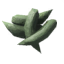
Carnada apestosaPodrá tener un hedor nauseabundo, pero el pez que esta carnada atrae es usado para cosas mucho peores.
Cómo conseguirlo
- Fabricar: 20 × Mesa para preparación de alimentos a partir de 20 ×
 Cebo, 1 ×
Cebo, 1 ×  Trofeo de abominación
Trofeo de abominación
Uso
- Cebo para: Arenque gigante
 Carnada brumosa
Carnada brumosa
Una carnada para guiar al pez hasta a ti a través de aguas envueltas.
Cómo conseguirlo
- Fabricar: 20 × Mesa para preparación de alimentos a partir de 20 × Cebo, 1 ×
 Trofeo de luey
Trofeo de luey
Uso
 Carnada caliente
Carnada caliente
A algunos peces les gusta cuando el agua está tibia, esta carnada lleva la temperatura hasta el punto de ebullición.
Cómo conseguirlo
- Fabricar: 20 × Mesa para preparación de alimentos a partir de 20 × Cebo, 1 ×
 Trofeo de guerrero
Trofeo de guerrero
Uso
- Cebo para: Magmapez
 Carnada fría
Carnada fría
Esta carnada no parece la gran cosa, pero es un deleite para un pez que vive donde sé es frío y oscuro.
Cómo conseguirlo
- Fabricar: 20 × Mesa para preparación de alimentos a partir de 20 × Cebo, 1 ×
 Trofeo de fenring
Trofeo de fenring
Uso
- Cebo para: Tetra
 Carnada helada
Carnada helada
No es muy nutritivo, por lo que los únicos peces que comerían esta carnada son los que están acostumbrados a comer hielo.
Cómo conseguirlo
- Fabricar: 20 × Mesa para preparación de alimentos a partir de 20 × Cebo, 1 × Trofeo de draco
Uso
- Cebo para: Salmón norteño
 Carnada musgosa
Carnada musgosa
Los trolls muertos en bosques atraen a uno o dos peces, ¡Acelera el proceso con esta carnada!
Cómo conseguirlo
- Fabricar: 20 × Mesa para preparación de alimentos a partir de 20 × Cebo, 1 ×
 Trofeo de trol
Trofeo de trol
Uso
- Cebo para: Pez troll
 Carnada pesada
Carnada pesada
Esta carnada llega hasta el fondo, lo suficiente como para atraer a peces que nadan en lo más profundo del océano.
Cómo conseguirlo
- Fabricar: 20 × Mesa para preparación de alimentos a partir de 20 × Cebo, 1 ×
 Trofeo de serpiente
Trofeo de serpiente
Uso
- Cebo para: Atún, Bacalao de coral
 Carnada picosa
Carnada picosa
De la misma forma que no eres inmune a las picaduras de mosquitos, ¡Los peces de por aquí sí que no serán inmunes a esto!
Cómo conseguirlo
- Fabricar: 20 × Mesa para preparación de alimentos a partir de 20 × Cebo, 1 ×
 Trofeo de fuling
Trofeo de fuling
Uso
- Cebo para: Mero
Cebo
Cebo típico de los dvergr. La caña se vende por separado.
Cómo conseguirlo
- Comprar: Haldor · 10 monedas (× 20)
- Recoger: Cueva helada · 2–4 ×
Uso
- Ingrediente para: Carnada apestosa, Carnada brumosa, Carnada caliente, Carnada fría, Carnada helada, Carnada musgosa, Carnada pesada, Carnada picosa
- Cebo para: Lucio, Perca
 Colmillo de draugr
Colmillo de draugr
Madera oscura acordonada con tendones brillantes. Es algo atroz.
Cómo conseguirlo
- Fabricar: Forja (nivel 2) a partir de 10 ×
 Corteza ancestral, 20 ×
Corteza ancestral, 20 ×  Plata, 2 × Piel de ciervo, 10 ×
Plata, 2 × Piel de ciervo, 10 ×  Viscosidad · por mejora: 5 × Corteza ancestral, 10 × Plata, 2 × Piel de ciervo, 2 × Viscosidad
Viscosidad · por mejora: 5 × Corteza ancestral, 10 × Plata, 2 × Piel de ciervo, 2 × Viscosidad
 Colmillo de las cenizas
Colmillo de las cenizas
Surgido nuevamente de las cenizas, este arco contiene una fuerza inflexible.
Cómo conseguirlo
- Fabricar: Forja negra (nivel 3) a partir de 10 × Madera de ceniza, 16 × Hueso carbonizado, 5 × Flametal, 5 ×
 Diente de faucesoseas · por mejora: 5 × Madera de ceniza, 10 × Hueso carbonizado, 5 × Flametal, 5 × Diente de faucesoseas
Diente de faucesoseas · por mejora: 5 × Madera de ceniza, 10 × Hueso carbonizado, 5 × Flametal, 5 × Diente de faucesoseas
Uso
- Ingrediente para: Colmillo de raíz, Colmillo de sangre, Colmillo de tormenta
 Colmillo de raíz
Colmillo de raíz
Así como la rama retorcida busca el sol, este arco busca la matanza.
Cómo conseguirlo
- Fabricar: Forja negra (nivel 4) a partir de 1 × Colmillo de las cenizas, 5 × Flametal, 1 × Jade · por mejora: 5 × Flametal, 1 × Jade
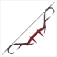
Colmillo de sangreLas flechas lanzadas con este arco desgarrarán la carne con una ferocidad inigualable.
Cómo conseguirlo
- Fabricar: Forja negra (nivel 4) a partir de 1 × Colmillo de las cenizas, 5 × Flametal, 1 × Piedra de sangre · por mejora: 5 × Flametal, 1 × Piedra de sangre
 Colmillo de tormenta
Colmillo de tormenta
Deja que tus flechas sean tan ágiles como un rayo que cae.
Cómo conseguirlo
- Fabricar: Forja negra (nivel 4) a partir de 1 × Colmillo de las cenizas, 5 × Flametal, 1 ×
 Iolita · por mejora: 5 × Flametal, 1 × Iolita
Iolita · por mejora: 5 × Flametal, 1 × Iolita
 Cuchillo de carnicero
Cuchillo de carnicero
Un cuchillo de carnicero diseñado específicamente para matar animales domesticados.
Cómo conseguirlo
 Cuchillo de cobre
Cuchillo de cobre
Un cuchillo de cobre reluciente.
Cómo conseguirlo
- Fabricar: Forja a partir de 2 × Madera, 8 ×
 Cobre · por mejora: 4 × Cobre, 8 ×
Cobre · por mejora: 4 × Cobre, 8 ×  Ojo de grisucio
Ojo de grisucio
 Cuchillo de madera
Cuchillo de madera
Algunas personas dirían que este cuchillo es mejor para la mantequilla.
Cómo conseguirlo
- Cofres: Barco de piedras (tumba) · 8,7 % de probabilidad
 Cuchillo de metal negro
Cuchillo de metal negro
Tiene una hoja oscura, resistente y afilada.
Cómo conseguirlo
- Fabricar: Forja (nivel 4) a partir de 4 × Madera noble, 10 × Metal negro, 5 × Hilo de lino · por mejora: 4 × Metal negro, 5 × Hilo de lino
 Cuchillo de plata
Cuchillo de plata
Un pedazo de dolor salvaje.
Cómo conseguirlo
- Fabricar: Forja (nivel 3) a partir de 2 × Madera, 10 × Plata, 3 × Trozos de cuero, 2 × Hierro · por mejora: 1 × Madera, 5 × Plata, 1 × Trozos de cuero, 1 × Hierro
 Cuchillo de sílex
Cuchillo de sílex
Sílex afilado; una herramienta muy fidedigna.
Cómo conseguirlo
- Fabricar: Banco de trabajo a partir de 2 × Madera, 4 ×
 Sílex, 2 × Trozos de cuero · por mejora: 2 × Sílex
Sílex, 2 × Trozos de cuero · por mejora: 2 × Sílex
 Cuerno de celebración
Cuerno de celebración
Ya hace un año que llegamos... ¡Skål!
Cómo conseguirlo
- Fabricar: Banco de trabajo a partir de 2 × Bronce, 2 ×
 Piel de trol, 2 × Hierro
Piel de trol, 2 × Hierro
 Cuerno de hidromiel de Odín
Cuerno de hidromiel de Odín
Los mejores guerreros de Odín se merecen las mejores bebidas.
Cómo conseguirlo
- Fabricar: Banco de trabajo a partir de 4 × Madera noble, 1 ×
 Trofeo de ciervo, 2 × Resina
Trofeo de ciervo, 2 × Resina
 Cultivador
Cultivador
Una herramienta agraria para labrar la tierra.
Cómo conseguirlo
- Fabricar: Forja a partir de 5 × Madera resistente, 5 × Bronce · por mejora: 1 × Madera resistente, 1 × Bronce
 Daga de fuego gélido
Daga de fuego gélido
Un corte de esta hoja escuece como el hielo y luego quema como el fuego.
Cómo conseguirlo
- Fabricar: Forja negra (nivel 4) a partir de 1 ×
 Daga nord, 20 × Oro sanguino, 1 × Esencia de fuego gélido · por mejora: 10 × Oro sanguino, 1 × Esencia de fuego gélido
Daga nord, 20 × Oro sanguino, 1 × Esencia de fuego gélido · por mejora: 10 × Oro sanguino, 1 × Esencia de fuego gélido
 Daga de sangre de trueno
Daga de sangre de trueno
La hoja ya está manchada de sangre, pero chisporrotea ansiando más.
Cómo conseguirlo
- Fabricar: Forja negra (nivel 4) a partir de 1 × Daga nord, 20 × Oro sanguino, 1 × Esencia de sangre de trueno · por mejora: 10 × Oro sanguino, 1 × Esencia de sangre de trueno
Daga nord
Un destello de oro es lo último que verán tus enemigos.
Cómo conseguirlo
- Fabricar: Forja negra (nivel 4) a partir de 20 × Oro sanguino, 1 ×
 Molde: daga nord, 10 × Leño de construcción · por mejora: 10 × Oro sanguino, 5 × Leño de construcción
Molde: daga nord, 10 × Leño de construcción · por mejora: 10 × Oro sanguino, 5 × Leño de construcción - Cocinar: Forja de escarcha a partir de
 Pieza fundida: daga nord
Pieza fundida: daga nord
Uso
- Ingrediente para: Daga de fuego gélido, Daga de sangre de trueno
 Demoledor
Demoledor
Este poderoso mazo añora causar desastres.
Cómo conseguirlo
- Fabricar: Forja negra a partir de 10 × Madera de Yggdrasil, 20 × Hierro, 10 × Eitr refinado · por mejora: 2 × Madera de Yggdrasil, 15 × Hierro, 2 × Eitr refinado
 Desgarradora
Desgarradora
Desgarra a tus enemigos, así de simple.
Cómo conseguirlo
- Fabricar: Forja negra (nivel 3) a partir de 10 × Madera de ceniza, 8 × Flametal, 2 × Tendón de Morgen, 4 × Diente de faucesoseas · por mejora: 5 × Madera de ceniza, 4 × Flametal, 1 × Tendón de Morgen, 4 × Diente de faucesoseas
Uso
- Ingrediente para: Desgarradora de heridas, Desgarradora de las tormentas, Desgarradora de raíz
 Desgarradora de heridas
Desgarradora de heridas
Lista para hacer pedazos a tus enemigos.
Cómo conseguirlo
- Fabricar: Forja negra (nivel 4) a partir de 1 × Desgarradora, 8 × Flametal, 1 × Piedra de sangre · por mejora: 8 × Flametal, 1 × Piedra de sangre
 Desgarradora de las tormentas
Desgarradora de las tormentas
Las flechas atravesarán a tus enemigos como un vendaval especialmente desagradable.
Cómo conseguirlo
- Fabricar: Forja negra (nivel 4) a partir de 1 × Desgarradora, 8 × Flametal, 1 × Iolita · por mejora: 8 × Flametal, 1 × Iolita
 Desgarradora de raíz
Desgarradora de raíz
Si la flecha no inmoviliza a tu enemigo, las raíces que surgen del suelo seguramente lo harán.
Cómo conseguirlo
- Fabricar: Forja negra (nivel 4) a partir de 1 × Desgarradora, 8 × Flametal, 1 × Jade · por mejora: 8 × Flametal, 1 × Jade
 Despellejadores
Despellejadores
Si un lobo se vale de sus garras, así puede hacerlo un vikingo.
Cómo conseguirlo
- Fabricar: Forja (nivel 3) a partir de 10 ×
 Pelo de Fenris, 6 ×
Pelo de Fenris, 6 ×  Garra de Fenris, 10 × Plata · por mejora: 1 × Pelo de Fenris, 1 × Garra de Fenris, 1 × Plata
Garra de Fenris, 10 × Plata · por mejora: 1 × Pelo de Fenris, 1 × Garra de Fenris, 1 × Plata
 Divisora
Divisora
Divide los corazones de tus enemigos en dos.
Cómo conseguirlo
- Fabricar: Forja negra (nivel 3) a partir de 10 × Madera de ceniza, 6 × Flametal, 2 × Pellejo de cenicerdo, 3 × Diente de faucesoseas · por mejora: 5 × Madera de ceniza, 6 × Flametal, 1 × Pellejo de cenicerdo, 3 × Diente de faucesoseas
Uso
- Ingrediente para: Divisora primigenia, Divisora sangrienta, Divisora tempestuosa
 Divisora primigenia
Divisora primigenia
Las fuerzas de la naturaleza irrumpen en el suelo allá donde golpea esta lanza.
Cómo conseguirlo
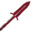
Divisora sangrientaSe debe hacer un pequeño sacrificio para cada batalla...
Cómo conseguirlo
- Fabricar: Forja negra (nivel 4) a partir de 1 × Divisora, 6 × Flametal, 1 × Piedra de sangre · por mejora: 6 × Flametal, 1 × Piedra de sangre
 Divisora tempestuosa
Divisora tempestuosa
Deja que el trueno divida el aire.
Cómo conseguirlo
 Dundr
Dundr
Lo que suceda a continuación puede dejarte en shock.
Cómo conseguirlo
- Fabricar: Mesa de galdr (nivel 2) a partir de 10 × Madera de ceniza, 4 × Flametal, 3 × Pluma celestial, 1 × Piedra de sangre · por mejora: 5 × Madera de ceniza, 2 × Flametal, 3 × Pluma celestial, 1 × Piedra de sangre
 Dyrnwyn
Dyrnwyn
La espada que se rompió vuelve a estar entera. Sus llamas son ardientes, alimentadas por los recuerdos de los antiguos guerreros.
Cómo conseguirlo
- Fabricar: Forja negra (nivel 4) a partir de 1 ×
 Fragmento de empuñadura de Dyrnwyn, 1 ×
Fragmento de empuñadura de Dyrnwyn, 1 ×  Fragmento de espada de Dyrnwyn, 1 ×
Fragmento de espada de Dyrnwyn, 1 ×  Fragmento de punta de Dyrnwyn, 20 × Flametal, 1 × Piedra de sangre · por mejora: 10 × Flametal, 1 × Piedra de sangre
Fragmento de punta de Dyrnwyn, 20 × Flametal, 1 × Piedra de sangre · por mejora: 10 × Flametal, 1 × Piedra de sangre
 Escarchador
Escarchador
Los muertos temen la plata. Recuérdales el motivo.
Cómo conseguirlo
- Fabricar: Forja (nivel 3) a partir de 10 × Corteza ancestral, 30 × Plata, 5 ×
 Carne de Ymir, 5 × Glándula congelada · por mejora: 15 × Plata
Carne de Ymir, 5 × Glándula congelada · por mejora: 15 × Plata
 Espada de bronce
Espada de bronce
Una aliada sedienta de sangre.
Cómo conseguirlo
- Fabricar: Forja a partir de 2 × Madera, 8 × Bronce, 2 × Trozos de cuero · por mejora: 1 × Madera, 4 × Bronce, 1 × Trozos de cuero
 Espada de fuego gélido
Espada de fuego gélido
Las llamas danzan a lo largo de esta hoja, pero ¿son calientes o frías?
Cómo conseguirlo
- Fabricar: Forja negra (nivel 4) a partir de 1 ×
 Espada nord, 20 × Oro sanguino, 1 × Esencia de fuego gélido · por mejora: 10 × Oro sanguino, 1 × Esencia de fuego gélido
Espada nord, 20 × Oro sanguino, 1 × Esencia de fuego gélido · por mejora: 10 × Oro sanguino, 1 × Esencia de fuego gélido
 Espada de hierro
Espada de hierro
La fina línea entre la vida y la muerte recorre el filo de esta espada.
Cómo conseguirlo
- Fabricar: Forja (nivel 2) a partir de 2 × Madera, 20 × Hierro, 3 × Trozos de cuero · por mejora: 1 × Madera, 10 × Hierro, 2 × Trozos de cuero
 Espada de madera
Espada de madera
Mayormente inofensiva, a menos que seas muy persistente.
Cómo conseguirlo
- Fabricar: Banco de trabajo a partir de 5 × Madera, 3 × Madera noble, 2 × Madera resistente · por mejora: 1 × Madera, 10 × Madera noble, 2 × Madera resistente
 Espada de metal negro
Espada de metal negro
Una mezcla de belleza y muerte que refleja la luz con un tono verdoso.
Cómo conseguirlo
- Fabricar: Forja (nivel 4) a partir de 2 × Madera noble, 20 × Metal negro, 5 × Hilo de lino · por mejora: 10 × Metal negro, 5 × Hilo de lino
 Espada de plata
Espada de plata
El más puro de los metales; las impurezas no pueden soportar su tacto.
Cómo conseguirlo
- Fabricar: Forja (nivel 3) a partir de 2 × Madera, 40 × Plata, 3 × Trozos de cuero, 5 × Hierro · por mejora: 1 × Madera, 20 × Plata, 1 × Trozos de cuero, 3 × Hierro
 Espada de sangre de trueno
Espada de sangre de trueno
A medida que la sangre recorre la hoja, despierta la tormenta del interior.
Cómo conseguirlo
- Fabricar: Forja negra (nivel 4) a partir de 1 × Espada nord, 20 × Oro sanguino, 1 × Esencia de sangre de trueno · por mejora: 10 × Oro sanguino, 1 × Esencia de sangre de trueno
Espada nord
Esta arma reluce incluso con la luz más tenue.
Cómo conseguirlo
- Fabricar: Forja negra (nivel 4) a partir de 20 × Oro sanguino, 1 ×
 Molde: espada nord, 10 × Leño de construcción · por mejora: 10 × Oro sanguino, 5 × Leño de construcción
Molde: espada nord, 10 × Leño de construcción · por mejora: 10 × Oro sanguino, 5 × Leño de construcción - Cocinar: Forja de escarcha a partir de
 Pieza fundida: espada nord
Pieza fundida: espada nord
Uso
- Ingrediente para: Espada de fuego gélido, Espada de sangre de trueno
 Espadón de fuego gélido
Espadón de fuego gélido
Ante la disyuntiva de elegir entre un final ardiente o gélido, la respuesta es muy sencilla: ¿por qué no ambos a la vez?
Cómo conseguirlo
- Fabricar: Forja negra (nivel 4) a partir de 1 ×
 Espadón nord, 20 × Oro sanguino, 1 × Esencia de fuego gélido · por mejora: 10 × Oro sanguino, 1 × Esencia de fuego gélido
Espadón nord, 20 × Oro sanguino, 1 × Esencia de fuego gélido · por mejora: 10 × Oro sanguino, 1 × Esencia de fuego gélido
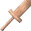
Espadón de madera¿Podrías tener cuidado con eso por favor?
Cómo conseguirlo
- Cofres: Torre de guardia dvergr (ruina) · 14 % de probabilidad, Aguja de roca · 14 % de probabilidad, Mina infestada · 12 % de probabilidad
 Espadón de sangre de trueno
Espadón de sangre de trueno
Quien empuñe esta arma resultará realmente aterrador.
Cómo conseguirlo
- Fabricar: Forja negra (nivel 4) a partir de 1 × Espadón nord, 20 × Oro sanguino, 1 × Esencia de sangre de trueno · por mejora: 10 × Oro sanguino, 1 × Esencia de sangre de trueno
Espadón nord
Un arma impactante, tanto visual como letalmente.
Cómo conseguirlo
- Fabricar: Forja negra (nivel 4) a partir de 20 × Oro sanguino, 1 ×
 Molde: espadón nord, 2 ×
Molde: espadón nord, 2 ×  Rama congelada · por mejora: 10 × Oro sanguino, 1 × Rama congelada
Rama congelada · por mejora: 10 × Oro sanguino, 1 × Rama congelada - Cocinar: Forja de escarcha a partir de
 Pieza fundida: espadón nord
Pieza fundida: espadón nord
Uso
- Ingrediente para: Espadón de fuego gélido, Espadón de sangre de trueno
 Estallacolumnas
Estallacolumnas
Usar este arco es un trabajo que te rompe la espalda, pero sí que lo vale.
Cómo conseguirlo
- Fabricar: Forja negra a partir de 10 × Madera noble, 40 ×
 Fragmentos de hueso, 10 × Eitr refinado · por mejora: 5 × Madera noble, 20 × Fragmentos de hueso
Fragmentos de hueso, 10 × Eitr refinado · por mejora: 5 × Madera noble, 20 × Fragmentos de hueso
 Estrella de tormenta
Estrella de tormenta
Particularmente eficaz en las mañanas nubladas.
Cómo conseguirlo
- Fabricar: Forja negra (nivel 4) a partir de 1 ×
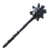
Maza de llametal, 8 ×Flametal, 1 × Iolita · por mejora: 8 × Flametal, 1 × Iolita
 Flecha carbonizada
Flecha carbonizada
Esta flecha ha sido tallada a partir de un fémur carbonizado y es tan dura como cualquier metal.
Cómo conseguirlo
- Fabricar: 20 × Forja negra a partir de 4 × Hueso carbonizado, 2 × Plumas, 8 × Madera de ceniza
- Cofres: Barco de piedras (tumba) · 5–11 × · 53 % de probabilidad, Aldea del Norte · 5–11 × · 53 % de probabilidad, Cabaña (Norte) · 5–11 × · 52 % de probabilidad, Campamento de leñadores · 5–11 × · 52 % de probabilidad, Mörk Borg · 5–11 × · 48 % de probabilidad, Naufragio (Norte) · 3–13 × · 17 % de probabilidad
 Flecha de aguja
Flecha de aguja
La última punzada.
Cómo conseguirlo
 Flecha de bronce
Flecha de bronce
Más afilada que el sílex; una impecable mensajera de la muerte.
Cómo conseguirlo
 Flecha de caparazón
Flecha de caparazón
Pesada y puntiaguda, este sí que dolerá.
Cómo conseguirlo
- Fabricar: 20 × Forja negra a partir de 4 ×
 Caparazón, 2 × Plumas, 8 × Madera
Caparazón, 2 × Plumas, 8 × Madera - Cofres: Agujero pútrido (Morgen) · 3–12 × · 46 % de probabilidad
 Flecha de hierro
Flecha de hierro
Coronada con hierro y adornada con plumas oscuras.
Cómo conseguirlo
- Fabricar: 20 × Forja (nivel 2) a partir de 8 × Madera, 1 × Hierro, 2 × Plumas
- Cofres: Ruina del pantano (torre) · 10–15 × · 37 % de probabilidad, Cementerio · 10–15 × · 37 % de probabilidad, Cripta hundida · 10–15 × · 36 % de probabilidad
 Flecha de madera
Flecha de madera
Flecha hecha de madera afilada.
Cómo conseguirlo
- Fabricar: 20 × Banco de trabajo a partir de 8 × Madera
 Flecha de obsidiana
Flecha de obsidiana
Una pizca de oscuridad.
Cómo conseguirlo
- Fabricar: 20 × Banco de trabajo (nivel 3) a partir de 8 × Madera, 4 ×
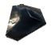
Obsidiana, 2 ×Plumas - Cofres: Stonehenge · 5–10 × · 62 % de probabilidad
 Flecha de oro sanguino
Flecha de oro sanguino
Una flecha forjada con los que posiblemente sean los materiales más duros de este mundo...
Cómo conseguirlo
- Fabricar: 20 × Forja negra a partir de 1 × Oro sanguino, 2 × Plumas, 8 × Leño de construcción
 Flecha de plata
Flecha de plata
Una aguja que calma a los espíritus inquietos.
Cómo conseguirlo
 Flecha de sílex
Flecha de sílex
Perfora las pieles con la punta de sílex.
Cómo conseguirlo
- Fabricar: 20 × Banco de trabajo (nivel 2) a partir de 8 × Madera, 2 × Sílex, 2 × Plumas
- Cofres: Ruina de combate · 10–20 × · 50 % de probabilidad, Ruina de torre · 5–10 × · 48 % de probabilidad, Ruina · 5–10 × · 48 % de probabilidad, Cabaña del pantano · 5–10 × · 48 % de probabilidad, Ruina de torre hundida · 5–10 × · 48 % de probabilidad, Cueva de trol · 5–10 × · 48 % de probabilidad, Ruina de casa de piedra · 5–10 × · 48 % de probabilidad, Cámaras funerarias (Bosque Negro) · 5–10 × · 46 % de probabilidad, Misión de Hildir: Tumba humeante · 5–10 × · 46 % de probabilidad, Casa de madera abandonada · 10–20 × · 28–36 % de probabilidad, Granja abandonada · 10–20 × · 36 % de probabilidad, Aldea draugr · 10–20 × · 36 % de probabilidad
 Flecha gélida
Flecha gélida
Una esquirla de hielo punzante.
Cómo conseguirlo
- Fabricar: 20 × Banco de trabajo (nivel 4) a partir de 8 × Madera, 4 × Obsidiana, 2 × Plumas, 1 × Glándula congelada
- Cofres: Cabaña de troncos abandonada · 5–10 × · 44 % de probabilidad, Pozo de montaña · 5–10 × · 44 % de probabilidad, Ruina de torre · 5–10 × · 44 % de probabilidad
 Flecha ígnea
Flecha ígnea
Esta flecha quema a todo lo que perfora.
Cómo conseguirlo
- Fabricar: 20 × Banco de trabajo (nivel 2) a partir de 8 × Madera, 8 × Resina, 2 × Plumas
- Cofres: Barco de piedras (tumba) · 10–15 × · 39 % de probabilidad
 Flecha ponzoñosa
Flecha ponzoñosa
Una punzada de amargura desde la distancia.
Cómo conseguirlo
- Fabricar: 20 × Banco de trabajo (nivel 3) a partir de 8 × Madera, 4 × Obsidiana, 2 × Plumas, 2 × Lodo
- Cofres: Ruina del pantano (torre) · 10–15 × · 37 % de probabilidad, Cementerio · 10–15 × · 37 % de probabilidad, Cripta hundida · 10–15 × · 36 % de probabilidad
 Gancho de agarre
Gancho de agarre
Para una entrada dramática o una rápida retirada.
Cómo conseguirlo
- Fabricar: Forja negra a partir de 10 × Madera de Yggdrasil, 10 × Eitr refinado, 4 ×
 Mandíbula, 1 ×
Mandíbula, 1 ×  Gancho
Gancho
 Garras de Bjorn
Garras de Bjorn
Hechas para romper y destrozar.
Cómo conseguirlo
- Fabricar: Banco de trabajo (nivel 2) a partir de 2 ×
 Piel de Bjorn, 2 ×
Piel de Bjorn, 2 ×  Pata de Bjorn, 4 × Trozos de cuero · por mejora: 2 × Piel de Bjorn, 2 × Trozos de cuero
Pata de Bjorn, 4 × Trozos de cuero · por mejora: 2 × Piel de Bjorn, 2 × Trozos de cuero
 Garras furiosas de hueso vil
Garras furiosas de hueso vil
Estas garras desgarran carne y hueso por igual.
Cómo conseguirlo
- Fabricar: Forja (nivel 4) a partir de 2 × Piel de Bjorn, 2 ×
 Caja torácica vil, 2 × Metal negro, 4 × Hilo de lino · por mejora: 1 × Piel de Bjorn, 1 × Caja torácica vil, 1 × Metal negro, 2 × Hilo de lino
Caja torácica vil, 2 × Metal negro, 4 × Hilo de lino · por mejora: 1 × Piel de Bjorn, 1 × Caja torácica vil, 1 × Metal negro, 2 × Hilo de lino
 Garrote
Garrote
Arma tosca, pero muy útil.
Cómo conseguirlo
- Fabricar: sin mesa de trabajo a partir de 6 × Madera · por mejora: 5 × Fragmentos de hueso
 Golpe de relámpago
Golpe de relámpago
Simplemente apunta e invocarás la furia del cielo.
Cómo conseguirlo
- Fabricar: Mesa de galdr (nivel 3) a partir de 10 × Oro sanguino, 5 ×
 Hilo de Norna, 1 × Esencia de sangre de trueno · por mejora: 5 × Oro sanguino, 2 × Hilo de Norna, 1 × Esencia de sangre de trueno
Hilo de Norna, 1 × Esencia de sangre de trueno · por mejora: 5 × Oro sanguino, 2 × Hilo de Norna, 1 × Esencia de sangre de trueno - Cocinar: Forja de escarcha a partir de
 Pieza fundida: golpe de relámpago
Pieza fundida: golpe de relámpago
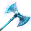
Gran hacha de fuego gélido¡Golpea a tus enemigos con un infierno helado!
Cómo conseguirlo
- Fabricar: Forja negra (nivel 4) a partir de 1 ×
 Gran hacha nord, 20 × Oro sanguino, 1 × Esencia de fuego gélido · por mejora: 10 × Oro sanguino, 1 × Esencia de fuego gélido
Gran hacha nord, 20 × Oro sanguino, 1 × Esencia de fuego gélido · por mejora: 10 × Oro sanguino, 1 × Esencia de fuego gélido
 Gran hacha de sangre de trueno
Gran hacha de sangre de trueno
Al partir a tus enemigos en dos, su sangre resonará como una tormenta.
Cómo conseguirlo
- Fabricar: Forja negra (nivel 4) a partir de 1 × Gran hacha nord, 20 × Oro sanguino, 1 × Esencia de sangre de trueno · por mejora: 10 × Oro sanguino, 1 × Esencia de sangre de trueno
Gran hacha nord
Un hacha poderosa para un guerrero poderoso.
Cómo conseguirlo
- Fabricar: Forja negra (nivel 4) a partir de 20 × Oro sanguino, 1 ×
 Molde: gran hacha nord, 10 × Leño de construcción · por mejora: 10 × Oro sanguino, 5 × Leño de construcción
Molde: gran hacha nord, 10 × Leño de construcción · por mejora: 10 × Oro sanguino, 5 × Leño de construcción - Cocinar: Forja de escarcha a partir de
 Pieza fundida: gran hacha nord
Pieza fundida: gran hacha nord
Uso
- Ingrediente para: Gran hacha de fuego gélido, Gran hacha de sangre de trueno
 Guadaña
Guadaña
La herramienta adecuada facilita enormemente la tarea en cuestión.
Cómo conseguirlo
- Fabricar: Forja (nivel 2) a partir de 1 ×
 Mango de guadaña, 6 × Plata · por mejora: 5 × Plata
Mango de guadaña, 6 × Plata · por mejora: 5 × Plata
 Hacha de batalla de metal negro
Hacha de batalla de metal negro
El verde será lo último que vean tus enemigos antes de que los partas en dos.
Cómo conseguirlo
- Fabricar: Forja (nivel 4) a partir de 10 × Madera noble, 30 × Metal negro, 5 × Hilo de lino · por mejora: 15 × Metal negro, 5 × Hilo de lino
 Hacha de bronce
Hacha de bronce
Tiene una hoja brillante y pulida, curvada cual sonrisa.
Cómo conseguirlo
- Fabricar: Forja a partir de 4 × Madera, 8 × Bronce, 2 × Trozos de cuero · por mejora: 4 × Bronce, 1 × Trozos de cuero
 Hacha de fuego gélido
Hacha de fuego gélido
Arrásalo todo con fuego o congélalo en un eterno instante de destrucción...
Cómo conseguirlo
- Fabricar: Forja negra (nivel 4) a partir de 1 ×
 Hacha nord, 20 × Oro sanguino, 1 × Esencia de fuego gélido · por mejora: 10 × Oro sanguino, 1 × Esencia de fuego gélido
Hacha nord, 20 × Oro sanguino, 1 × Esencia de fuego gélido · por mejora: 10 × Oro sanguino, 1 × Esencia de fuego gélido
 Hacha de guerra
Hacha de guerra
Rompecráneos. La alegría de todo guerrero.
Cómo conseguirlo
- Fabricar: Forja (nivel 2) a partir de 30 × Corteza ancestral, 35 × Hierro, 4 × Trozos de cuero · por mejora: 5 × Corteza ancestral, 15 × Hierro
 Hacha de guerra de cristal
Hacha de guerra de cristal
Se ve a través de los tajos.
Cómo conseguirlo
- Fabricar: Forja (nivel 3) a partir de 40 × Corteza ancestral, 30 × Plata, 10 ×
 Cristal · por mejora: 5 × Corteza ancestral, 15 × Plata
Cristal · por mejora: 5 × Corteza ancestral, 15 × Plata
 Hacha de guerra de madera
Hacha de guerra de madera
Intimida, pero no tanto como la versión real.
Cómo conseguirlo
- Cofres: Cabaña de troncos abandonada · 10 % de probabilidad, Pozo de montaña · 10 % de probabilidad, Ruina de torre · 10 % de probabilidad
 Hacha de hierro
Hacha de hierro
Fuerte y afilada; la gran amiga de los leñadores.
Cómo conseguirlo
- Fabricar: Forja (nivel 2) a partir de 4 × Madera, 20 × Hierro, 2 × Trozos de cuero · por mejora: 10 × Hierro, 1 × Trozos de cuero
 Hacha de madera
Hacha de madera
¿No sería raro que esta hacha pudiera cortar madera?
Cómo conseguirlo
- Cofres: Barco de piedras (tumba) · 8,7 % de probabilidad
 Hacha de metal negro
Hacha de metal negro
Un hacha perfectamente equilibrada y forjada con metal oscuro que irradia una lustre esmeralda.
Cómo conseguirlo
- Fabricar: Forja (nivel 4) a partir de 6 × Madera noble, 20 × Metal negro, 5 × Hilo de lino · por mejora: 10 × Metal negro, 5 × Hilo de lino
 Hacha de piedra
Hacha de piedra
Un hacha tosca para talar árboles.
Cómo conseguirlo
 Hacha de sangre de trueno
Hacha de sangre de trueno
Al cortar madera y carne por igual, un estruendo atronador resonará por toda la tierra.
Cómo conseguirlo
- Fabricar: Forja negra (nivel 4) a partir de 1 × Hacha nord, 20 × Oro sanguino, 1 × Esencia de sangre de trueno · por mejora: 10 × Oro sanguino, 1 × Esencia de sangre de trueno
 Hacha de sílex
Hacha de sílex
Más afilada que la piedra.
Cómo conseguirlo
- Fabricar: Banco de trabajo a partir de 4 × Madera, 6 × Sílex · por mejora: 3 × Sílex, 2 × Trozos de cuero
Hacha nord
Un hacha de delicada factura, para acabar con tus enemigos con precisión.
Cómo conseguirlo
- Fabricar: Forja negra (nivel 4) a partir de 20 × Oro sanguino, 1 ×
 Molde: hacha nord, 10 × Leño de construcción · por mejora: 10 × Oro sanguino, 5 × Leño de construcción
Molde: hacha nord, 10 × Leño de construcción · por mejora: 10 × Oro sanguino, 5 × Leño de construcción - Cocinar: Forja de escarcha a partir de
 Pieza fundida: hacha nord
Pieza fundida: hacha nord
Uso
- Ingrediente para: Hacha de fuego gélido, Hacha de sangre de trueno
Hachas antiguas
Armas poderosas de antaño, de una era en la que el mundo aún era joven e incompleto...
Cómo conseguirlo
- Fabricar: Banco de trabajo a partir de 4 × Madera, 1 ×
 Cabeza de hacha curiosa, 1 ×
Cabeza de hacha curiosa, 1 ×  Cabeza de hacha misteriosa · por mejora: 2 × Madera, 2 × Trozos de cuero
Cabeza de hacha misteriosa · por mejora: 2 × Madera, 2 × Trozos de cuero
 Hachas berserkir
Hachas berserkir
Deja que tu ira tome el control y enfréntate a la masacre.
Cómo conseguirlo
- Fabricar: Forja negra (nivel 3) a partir de 15 × Hueso carbonizado, 24 × Flametal, 3 × Pellejo de cenicerdo · por mejora: 15 × Flametal, 1 × Pellejo de cenicerdo
Uso
- Ingrediente para: Hachas berserkir atronadoras, Hachas berserkir salvajes, Hachas berserkir sangrantes
 Hachas berserkir atronadoras
Hachas berserkir atronadoras
La carnicería te envuelve cuando empuñas estas hachas, y hasta el mismísimo Thor estaría orgulloso.
Cómo conseguirlo
- Fabricar: Forja negra (nivel 4) a partir de 1 × Hachas berserkir, 5 × Flametal, 1 × Iolita · por mejora: 5 × Flametal, 1 × Iolita
 Hachas berserkir salvajes
Hachas berserkir salvajes
Tus instintos más primarios toman las riendas y la naturaleza que te rodea se acerca para ayudarte.
Cómo conseguirlo
- Fabricar: Forja negra (nivel 4) a partir de 1 × Hachas berserkir, 5 × Flametal, 1 × Jade · por mejora: 5 × Flametal, 1 × Jade
 Hachas berserkir sangrantes
Hachas berserkir sangrantes
Cuanto más cerca esté tu muerte, más fuertes serán tus golpes.
Cómo conseguirlo
- Fabricar: Forja negra (nivel 4) a partir de 1 × Hachas berserkir, 5 × Flametal, 1 × Piedra de sangre · por mejora: 5 × Flametal, 1 × Piedra de sangre
 Himmin afl
Himmin afl
Puede no ser un martillo, pero el mismo Thor aprobaría esta arma.
Cómo conseguirlo
- Fabricar: Forja negra a partir de 10 × Madera de Yggdrasil, 15 × Eitr refinado, 5 × Plata, 2 × Mandíbula · por mejora: 15 × Eitr refinado, 5 × Plata, 2 × Mandíbula
 Invocador de espíritus
Invocador de espíritus
Invoca ayuda de otro mundo. Solo cuesta una gota de tu sangre...
Cómo conseguirlo
- Fabricar: Mesa de galdr (nivel 3) a partir de 8 × Rama congelada, 5 × Hilo de Norna, 1 ×
 Trofeo de alce · por mejora: 4 × Rama congelada, 2 × Hilo de Norna
Trofeo de alce · por mejora: 4 × Rama congelada, 2 × Hilo de Norna - Cocinar: Forja de escarcha a partir de
 Pieza fundida: invocador de espíritus
Pieza fundida: invocador de espíritus
 Jarra
Jarra
¡Skål!
Cómo conseguirlo
- Fabricar: Banco de trabajo a partir de 5 × Madera noble, 2 × Resina
 Jarra dvergr
Jarra dvergr
¡Puede contener un montón de hidromiel!
Cómo conseguirlo
- Cofres: Mina infestada · 6,3 % de probabilidad
- Recoger: Torre de guardia dvergr, Faro dvergr, La Reina
 Klossen
Klossen
Si la fuerza de tu golpe no es suficiente para derribar a tus enemigos, tal vez las raíces primigenias los sujeten por ti.
Cómo conseguirlo
- Fabricar: Forja negra (nivel 4) a partir de 1 × Maza de llametal, 8 × Flametal, 1 × Jade · por mejora: 8 × Flametal, 1 × Jade
 Krom
Krom
Tan letal como lo es brillante, y sí que es brillante.
Cómo conseguirlo
- Fabricar: Forja negra a partir de 30 × Hierro, 20 × Bronce, 5 ×
 Piel escamosa · por mejora: 15 × Hierro, 10 × Bronce, 5 × Piel escamosa
Piel escamosa · por mejora: 15 × Hierro, 10 × Bronce, 5 × Piel escamosa
 Lanza de bronce
Lanza de bronce
Lanza resistente con una cabeza de bronce pulido.
Cómo conseguirlo
- Fabricar: Forja a partir de 5 × Madera, 6 × Bronce, 2 × Piel de ciervo · por mejora: 3 × Madera, 4 × Bronce, 1 × Piel de ciervo
 Lanza de caparazón
Lanza de caparazón
Afilada hasta el dentado perfecto, esta lanza es ciertamente letal.
Cómo conseguirlo
- Fabricar: Forja negra a partir de 10 × Madera de Yggdrasil, 4 × Caparazón, 2 × Mandíbula · por mejora: 5 × Madera de Yggdrasil, 4 × Caparazón, 1 × Mandíbula
 Lanza de colmillo
Lanza de colmillo
Incluso tras la muerte, el colmillo de lobo anhela carne fresca.
Cómo conseguirlo
- Fabricar: Forja (nivel 3) a partir de 10 × Corteza ancestral, 4 ×
 Colmillo de lobo, 2 × Trozos de cuero, 2 × Plata · por mejora: 5 × Corteza ancestral, 2 × Colmillo de lobo, 1 × Trozos de cuero, 1 × Plata
Colmillo de lobo, 2 × Trozos de cuero, 2 × Plata · por mejora: 5 × Corteza ancestral, 2 × Colmillo de lobo, 1 × Trozos de cuero, 1 × Plata
 Lanza de corteza ancestral
Lanza de corteza ancestral
A pesar de su aspecto retorcido, esta lanza es muy fuerte y está perfectamente equilibrada.
Cómo conseguirlo
- Fabricar: Forja (nivel 3) a partir de 4 × Piel de trol, 10 × Hierro, 10 × Corteza ancestral · por mejora: 1 × Piel de trol, 5 × Hierro, 5 × Corteza ancestral
 Lanza de fuego gélido
Lanza de fuego gélido
Sumergida en llamas heladas, esta lanza augura una muerte segura.
Cómo conseguirlo
- Fabricar: Forja negra (nivel 4) a partir de 1 ×
 Lanza nord, 20 × Oro sanguino, 1 × Esencia de fuego gélido · por mejora: 10 × Oro sanguino, 1 × Esencia de fuego gélido
Lanza nord, 20 × Oro sanguino, 1 × Esencia de fuego gélido · por mejora: 10 × Oro sanguino, 1 × Esencia de fuego gélido
 Lanza de madera
Lanza de madera
Es tan afilada como una lanza de verdad, si dicha lanza estuviera hecha de madera.
Cómo conseguirlo
- Cofres: Ruina de torre · 11 % de probabilidad, Ruina · 11 % de probabilidad, Cabaña del pantano · 11 % de probabilidad, Ruina de torre hundida · 11 % de probabilidad, Cueva de trol · 11 % de probabilidad, Ruina de casa de piedra · 11 % de probabilidad
 Lanza de sangre de trueno
Lanza de sangre de trueno
Que golpee como un rayo, rápida y feroz.
Cómo conseguirlo
- Fabricar: Forja negra (nivel 4) a partir de 1 × Lanza nord, 20 × Oro sanguino, 1 × Esencia de sangre de trueno · por mejora: 10 × Oro sanguino, 1 × Esencia de sangre de trueno
 Lanza de sílex
Lanza de sílex
Si avistas algo que debe morir, deja que tu brazo envíe a la mensajera.
Cómo conseguirlo
- Fabricar: Banco de trabajo a partir de 5 × Madera, 10 × Sílex, 2 × Trozos de cuero · por mejora: 3 × Madera, 5 × Sílex, 1 × Trozos de cuero
Lanza nord
Una oportunidad de oro para atacar.
Cómo conseguirlo
- Fabricar: Forja negra (nivel 4) a partir de 20 × Oro sanguino, 1 ×
 Molde: lanza nord, 10 × Leño de construcción · por mejora: 10 × Oro sanguino, 5 × Leño de construcción
Molde: lanza nord, 10 × Leño de construcción · por mejora: 10 × Oro sanguino, 5 × Leño de construcción - Cocinar: Forja de escarcha a partir de
 Pieza fundida: lanza nord
Pieza fundida: lanza nord
Uso
- Ingrediente para: Lanza de fuego gélido, Lanza de sangre de trueno
 Levantamuertos
Levantamuertos
Sacrifica un poco de sangre para hacer surgir a los muertos. Mejora la calavera para invocar múltiples esqueletos, e incrementa tu magia de sangre para hacerlos más fuertes.
Cómo conseguirlo
- Fabricar: Mesa de galdr a partir de 10 × Fragmentos de hueso, 16 × Eitr refinado, 4 ×
 Trofeo de esqueleto · por mejora: 5 × Fragmentos de hueso, 8 × Eitr refinado, 2 × Trofeo de esqueleto
Trofeo de esqueleto · por mejora: 5 × Fragmentos de hueso, 8 × Eitr refinado, 2 × Trofeo de esqueleto
 Linterna dvergr
Linterna dvergr
Una simple antorcha estaría muy pasada de moda.
Cómo conseguirlo
- Fabricar: Forja negra a partir de 2 × Bronce, 1 × Corazón de surtling, 1 × Cristal
- Recoger: Excavación dvergr, Torre de guardia dvergr, Ruina de torre calcinada, Faro dvergr, La Reina
Uso
- Material de construcción para: Linterna dvergr para muro, Poste de linterna dvergr
 Martillo
Martillo
Con uno en mano, podrás construir salones altísimos y fortalezas grandiosas.
Cómo conseguirlo
 Maza de bronce
Maza de bronce
Un dolor de cabeza en un palo.
Cómo conseguirlo
- Fabricar: Forja a partir de 4 × Madera, 8 × Bronce, 3 × Trozos de cuero · por mejora: 4 × Bronce
 Maza de fuego gélido
Maza de fuego gélido
¿Son chispas lo que salta al impactar, o fragmentos de hielo?
Cómo conseguirlo
- Fabricar: Forja negra (nivel 4) a partir de 1 ×
 Maza nord, 20 × Oro sanguino, 1 × Esencia de fuego gélido · por mejora: 10 × Oro sanguino, 1 × Esencia de fuego gélido
Maza nord, 20 × Oro sanguino, 1 × Esencia de fuego gélido · por mejora: 10 × Oro sanguino, 1 × Esencia de fuego gélido
 Maza de hierro
Maza de hierro
Un pedazo de hierro del tamaño de una mano en un palo de madera.
Cómo conseguirlo
- Fabricar: Forja (nivel 2) a partir de 4 × Madera, 20 × Hierro, 3 × Trozos de cuero · por mejora: 10 × Hierro
Maza de llametal
Llametal denso y afilado, perfecto para golpear las caras de los enemigos.
Cómo conseguirlo
- Fabricar: Forja negra (nivel 3) a partir de 10 × Hueso carbonizado, 15 × Flametal, 5 × Azufre, 3 × Pellejo de cenicerdo · por mejora: 5 × Hueso carbonizado, 8 × Flametal, 3 × Azufre, 2 × Pellejo de cenicerdo
Uso
- Ingrediente para: Estrella de tormenta, Klossen, Sanguinaria
 Maza de madera
Maza de madera
Es de preguntarse por qué alguien haría esto en lugar de un simple garrote.
Cómo conseguirlo
- Cofres: Aldea draugr · 1–4 × · 32 % de probabilidad, Ruina de combate · 6 % de probabilidad
 Maza de sangre de trueno
Maza de sangre de trueno
Un arma capaz de rivalizar incluso con la del propio dios del trueno...
Cómo conseguirlo
- Fabricar: Forja negra (nivel 4) a partir de 1 × Maza nord, 20 × Oro sanguino, 1 × Esencia de sangre de trueno · por mejora: 10 × Oro sanguino, 1 × Esencia de sangre de trueno
Maza nord
Golpea rápido y fuerte, y no le dejes tiempo a tu enemigo para recuperarse.
Cómo conseguirlo
- Fabricar: Forja negra (nivel 4) a partir de 20 × Oro sanguino, 1 ×
 Molde: maza nord, 10 × Leño de construcción · por mejora: 10 × Oro sanguino, 5 × Leño de construcción
Molde: maza nord, 10 × Leño de construcción · por mejora: 10 × Oro sanguino, 5 × Leño de construcción - Cocinar: Forja de escarcha a partir de
 Pieza fundida: maza nord
Pieza fundida: maza nord
Uso
- Ingrediente para: Maza de fuego gélido, Maza de sangre de trueno
 Mazo de hierro
Mazo de hierro
Martillo todopoderoso, digno de cualquier campeón.
Cómo conseguirlo
- Fabricar: Forja (nivel 2) a partir de 10 × Corteza ancestral, 30 × Hierro, 4 × Carne de Ymir, 1 ×
 Trofeo de draugr de élite · por mejora: 2 × Corteza ancestral, 15 × Hierro, 2 × Carne de Ymir
Trofeo de draugr de élite · por mejora: 2 × Corteza ancestral, 15 × Hierro, 2 × Carne de Ymir
 Mazo de madera
Mazo de madera
Esto debe doler más de lo que debería.
Cómo conseguirlo
- Cofres: Ruina del pantano (torre) · 20 % de probabilidad, Cementerio · 20 % de probabilidad
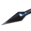
Misil de llametalForjado con uno de los metales más duros de todo Valheim, este misil seguramente mantendrá a raya a tus enemigos.
Cómo conseguirlo
- Fabricar: 20 × Mesa de artesanía a partir de 10 × Madera de ceniza, 1 × Flametal
 Navaja abisal
Navaja abisal
Cuchillo de las profundidades.
Cómo conseguirlo
- Fabricar: Banco de trabajo (nivel 2) a partir de 4 × Madera noble, 20 × Quitina, 2 × Trozos de cuero · por mejora: 10 × Quitina
 Nidhögg
Nidhögg
Esta espada, que lleva el nombre del dragón malvado que habita en las raíces del árbol del mundo, anuncia la desgracia a aquellos que se cruzan en su camino.
Cómo conseguirlo
- Fabricar: Forja negra (nivel 3) a partir de 3 × Hueso carbonizado, 12 × Flametal, 2 × Pellejo de cenicerdo · por mejora: 10 × Flametal, 2 × Pellejo de cenicerdo
Uso
- Ingrediente para: Nidhögg atronadora, Nidhögg primigenia, Nidhögg sangrienta
 Nidhögg atronadora
Nidhögg atronadora
El poder del relámpago danza a lo largo de la hoja de esta espada, una promesa del dolor venidero.
Cómo conseguirlo
 Nidhögg primigenia
Nidhögg primigenia
Enreda a tus enemigos en raíces, como sugiere su nombre
Cómo conseguirlo
 Nidhögg sangrienta
Nidhögg sangrienta
Si sangras, tus enemigos seguramente también lo harán.
Cómo conseguirlo
- Fabricar: Forja negra (nivel 4) a partir de 1 × Nidhögg, 6 × Flametal, 1 × Piedra de sangre · por mejora: 6 × Flametal, 1 × Piedra de sangre
 Nudillos de fuego gélido
Nudillos de fuego gélido
Un ligero riesgo de congelación es inevitable.
Cómo conseguirlo
- Fabricar: Forja negra (nivel 4) a partir de 1 ×
 Nudillos nord, 20 × Oro sanguino, 1 × Esencia de fuego gélido · por mejora: 10 × Oro sanguino, 1 × Esencia de fuego gélido
Nudillos nord, 20 × Oro sanguino, 1 × Esencia de fuego gélido · por mejora: 10 × Oro sanguino, 1 × Esencia de fuego gélido
 Nudillos de sangre de trueno
Nudillos de sangre de trueno
Una furia se apodera de ti al luchar con estas armas, tu sangre ruge como el trueno en tus oídos... Parece apropiado.
Cómo conseguirlo
- Fabricar: Forja negra (nivel 4) a partir de 1 × Nudillos nord, 20 × Oro sanguino, 1 × Esencia de sangre de trueno · por mejora: 10 × Oro sanguino, 1 × Esencia de sangre de trueno
Nudillos nord
Envuelve tus puños con los metales más duros para asegurarte de que tus enemigos sientan la fuerza de tus golpes.
Cómo conseguirlo
- Fabricar: Forja negra (nivel 4) a partir de 20 × Oro sanguino, 1 ×
 Molde: nudillos nord, 10 × Leño de construcción · por mejora: 10 × Oro sanguino, 5 × Leño de construcción
Molde: nudillos nord, 10 × Leño de construcción · por mejora: 10 × Oro sanguino, 5 × Leño de construcción - Cocinar: Forja de escarcha a partir de
 Pieza fundida: nudillos nord
Pieza fundida: nudillos nord
Uso
- Ingrediente para: Nudillos de fuego gélido, Nudillos de sangre de trueno
 Pala de nieve
Pala de nieve
Útil para despejar la nieve más profunda.
Cómo conseguirlo
- Fabricar: Forja negra (nivel 3) a partir de 5 × Madera noble, 4 × Flametal, 2 × Brasas · por mejora: 1 × Madera noble, 10 × Flametal
 Partecráneos
Partecráneos
Encontrarás cráneos que partir incluso en las brumas más densas.
Cómo conseguirlo
- Fabricar: Forja negra a partir de 30 × Hierro, 15 × Madera de Yggdrasil, 10 × Eitr refinado · por mejora: 15 × Hierro, 5 × Madera de Yggdrasil
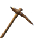
Pico de broncePico de bronce de calidad. Puede romper rocas muy duras.
Cómo conseguirlo
- Fabricar: Forja a partir de 3 × Madera resistente, 10 × Bronce · por mejora: 1 × Madera resistente, 5 × Bronce
 Pico de cuernos
Pico de cuernos
Esta herramienta es tan fuerte que puede partir hasta las rocas más persistentes.
Cómo conseguirlo
- Fabricar: Banco de trabajo a partir de 10 × Madera, 1 ×
 Cornamenta dura
Cornamenta dura
 Pico de hierro
Pico de hierro
Una herramienta robusta de hierro endurecido.
Cómo conseguirlo
- Fabricar: Forja (nivel 2) a partir de 3 × Madera resistente, 20 × Hierro · por mejora: 1 × Madera resistente, 10 × Hierro
 Pico de metal negro
Pico de metal negro
Un buen y fuerte pico de brillante metal oscuro.
Cómo conseguirlo
- Fabricar: Forja (nivel 2) a partir de 3 × Madera de Yggdrasil, 25 × Metal negro · por mejora: 1 × Madera de Yggdrasil, 15 × Metal negro
 Proyectil de madera
Proyectil de madera
Robustos proyectiles de madera que puede proporcionar una dura defensa contra oponentes.
Cómo conseguirlo
- Fabricar: 20 × Mesa de artesanía a partir de 5 × Madera resistente, 2 × Plumas
 Proyectil de metal negro
Proyectil de metal negro
Estos gruesos proyectiles puede atravesar incluso la piel de los más fuertes oponentes.
Cómo conseguirlo
- Fabricar: 20 × Mesa de artesanía a partir de 10 × Madera, 1 × Metal negro
 Proyectil de oro sanguino
Proyectil de oro sanguino
Tu enemigo no tendrá ninguna oportunidad cuando este proyectil alcance su objetivo.
Cómo conseguirlo
- Fabricar: 20 × Mesa de artesanía a partir de 10 × Leño de construcción, 1 × Oro sanguino
 Púa de eco
Púa de eco
Un frío que cala hasta los huesos.
Cómo conseguirlo
- Fabricar: Mesa de galdr (nivel 3) a partir de 10 × Oro sanguino, 4 × Hilo de Norna, 1 × Esencia de fuego gélido · por mejora: 5 × Oro sanguino, 2 × Hilo de Norna, 1 × Esencia de fuego gélido
- Cocinar: Forja de escarcha a partir de
 Pieza fundida: púa de eco
Pieza fundida: púa de eco
 Puercoespín
Puercoespín
Un arma letal repleta de espinas diabólicas.
Cómo conseguirlo
- Fabricar: Forja (nivel 4) a partir de 5 × Madera noble, 20 × Hierro, 5 ×
 Aguja, 10 × Hilo de lino · por mejora: 2 × Hierro, 2 × Aguja
Aguja, 10 × Hilo de lino · por mejora: 2 × Hierro, 2 × Aguja
 Quebrantaciervos
Quebrantaciervos
¡Un arma digna de los dioses! Si te atacan con ella, lo lamentarás...
Cómo conseguirlo
- Fabricar: Banco de trabajo (nivel 2) a partir de 20 × Madera resistente, 5 × Trofeo de ciervo, 2 × Trozos de cuero · por mejora: 5 × Madera resistente, 2 × Trofeo de ciervo, 1 × Trozos de cuero, 10 × Fragmentos de hueso
 Ruina de los Jotun
Ruina de los Jotun
Ni siquiera los gigantes de antaño aguantarían la mordida ponzoñosa de esta arma.
Cómo conseguirlo
- Fabricar: Forja negra a partir de 5 × Madera de Yggdrasil, 15 × Hierro, 3 × Bolsa de bilis, 10 × Eitr refinado · por mejora: 10 × Hierro, 1 × Bolsa de bilis, 1 × Eitr refinado
 Sanguinaria
Sanguinaria
Esta maza absorbe la sangre como una esponja, y siempre anhela más.
Cómo conseguirlo
- Fabricar: Forja negra (nivel 4) a partir de 1 × Maza de llametal, 8 × Flametal, 1 × Piedra de sangre · por mejora: 8 × Flametal, 1 × Piedra de sangre
 Skoll y Hati
Skoll y Hati
Apuñala una vez a aquellos que te traicionaron, y dos veces a aquellos que odias.
Cómo conseguirlo
- Fabricar: Forja negra a partir de 4 × Madera noble, 10 × Hierro, 10 × Metal negro · por mejora: 4 × Hierro, 4 × Metal negro
 Trollstav
Trollstav
Invoca una bestia furiosa para causar muerte y destrucción.
Cómo conseguirlo
- Fabricar: Mesa de galdr (nivel 2) a partir de 15 × Hueso carbonizado, 1 × Trofeo de trol, 3 × Flametal, 1 × Piedra de sangre · por mejora: 5 × Hueso carbonizado, 1 × Trofeo de trol, 3 × Flametal, 1 × Piedra de sangre
 Venganza del norte
Venganza del norte
Un copo de nieve cautivo, con patrones infinitos emergiendo desde su interior...
Cómo conseguirlo
- Fabricar: Mesa de galdr (nivel 3) a partir de 10 × Hielo, 5 × Hilo de Norna, 1 ×
 Trofeo de Hexen · por mejora: 5 × Hielo, 2 × Hilo de Norna
Trofeo de Hexen · por mejora: 5 × Hielo, 2 × Hilo de Norna - Cocinar: Forja de escarcha a partir de
 Pieza fundida: venganza del norte
Pieza fundida: venganza del norte
 Virote carbonizado
Virote carbonizado
El hueso resistente de un antebrazo, con forma de flecha mortal.
Cómo conseguirlo
- Fabricar: 20 × Forja negra a partir de 2 × Hueso carbonizado, 8 × Madera de ceniza, 2 × Plumas
- Cofres: Barco de piedras (tumba) · 5–11 × · 53 % de probabilidad, Aldea del Norte · 5–11 × · 53 % de probabilidad, Cabaña (Norte) · 5–11 × · 52 % de probabilidad, Campamento de leñadores · 5–11 × · 52 % de probabilidad, Naufragio (Norte) · 3–13 × · 17 % de probabilidad
 Virote de caparazón
Virote de caparazón
Un virote pesado y sólido.
Cómo conseguirlo
 Virote de hierro
Virote de hierro
Un robusto proyectil de hierro.
Cómo conseguirlo
 Virote de hueso
Virote de hueso
Un tosco virote de hueso amarillento.
Cómo conseguirlo
- Fabricar: 20 × Forja negra a partir de 8 × Fragmentos de hueso, 2 × Plumas
 Virote de metal negro
Virote de metal negro
Un pulcro virote de metal negro.
Cómo conseguirlo
- Fabricar: 20 × Forja negra (nivel 2) a partir de 2 × Metal negro, 8 × Madera, 2 × Plumas
 Virote de oro sanguino
Virote de oro sanguino
Un virote forjado con los que posiblemente sean los materiales más duros de este mundo...
Cómo conseguirlo
- Fabricar: 20 × Forja negra a partir de 1 × Oro sanguino, 8 × Leño de construcción, 2 × Plumas